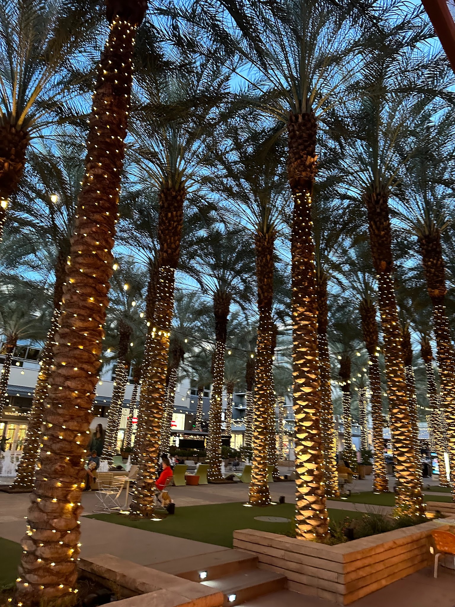
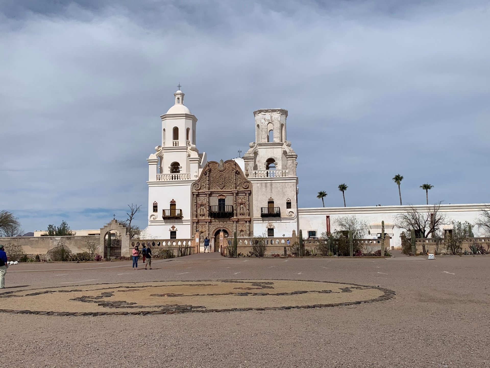
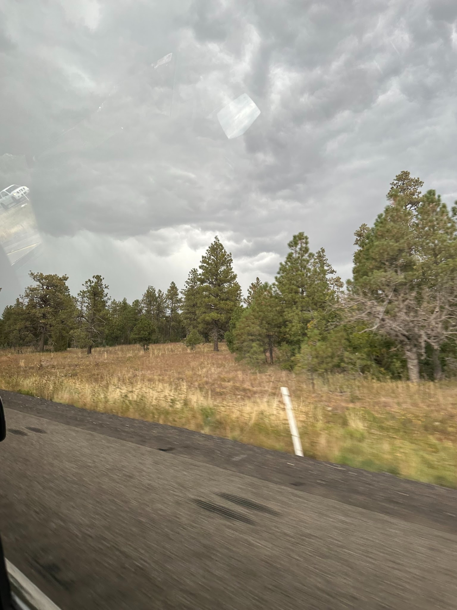
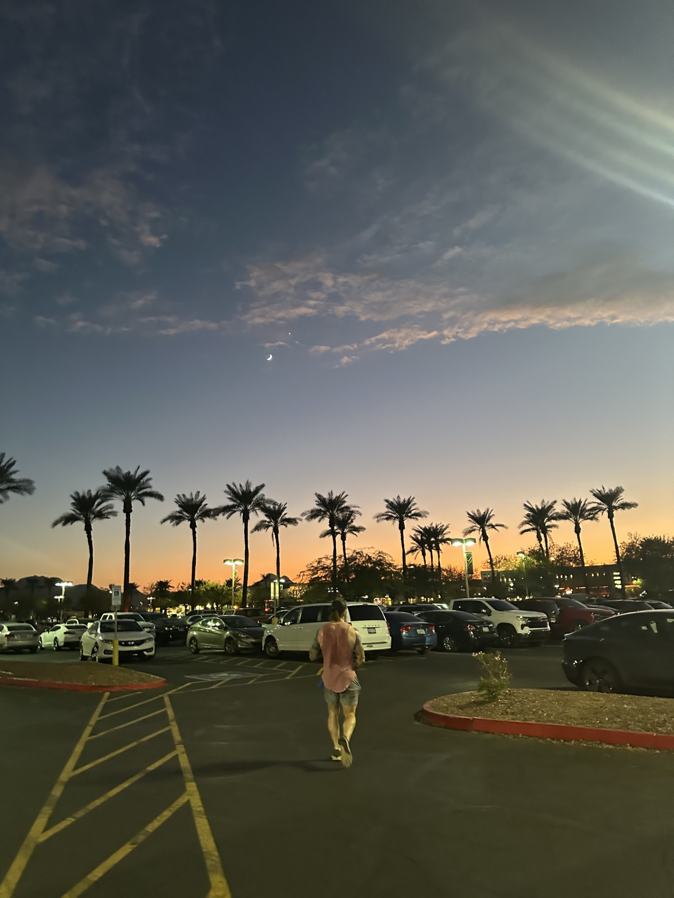

Scottsdale

Best for: Ages 13–17
Scottsdale is a great choice for younger people looking for shopping, food, entertainment, and fun activities. The weather is hot and dry, with especially hot summers and mild winters. Scottsdale is known for its shopping and entertainment, including Scottsdale Fashion Square, Scottsdale Quarter, Talking Stick Resort & Casino, and Old Town Scottsdale.
What you’ll find:
- Scottsdale Fashion Square
- Scottsdale Quarter
- Talking Stick Resort & Casino
- Old Town Scottsdale
Tucson

Best for: Ages 18–30
Tucson is a good choice for young adults who want a mix of outdoor activities, food, culture, and a lively social scene. The city has a hot, dry climate with mild winters and plenty of sunshine. Tucson is known for its downtown area, restaurants, nightlife, hiking, and historic sites. You can visit Old Tucson, Barrio Viejo, Mission San Xavier del Bac, and Saguaro National Park.
What you’ll find:
- Old Tucson
- Barrio Viejo
- Mission San Xavier del Bac
- Saguaro National Park
Flagstaff

Best for: Older Folks & Families
Flagstaff is a great choice for families and people looking for a slower-paced mountain getaway. Unlike the hotter parts of Arizona, Flagstaff experiences all four seasons, including snow in the winter. The city is surrounded by pine forests and offers hiking, skiing, stargazing, and a historic downtown. Some popular places include Lowell Observatory, the Grand Canyon, Route 66, and Coconino National Forest.
What you’ll find:
- Lowell Observatory
- Grand Canyon
- Route 66
- Coconino National Forest
Phoenix

Best for: Middle-Aged People
Phoenix is a good choice for people who want a more urban experience with restaurants, sports, shopping, museums, and entertainment. The city has very hot summers and mild winters. Downtown Phoenix is especially popular for its restaurants, art, sports, and events. You can catch an Arizona Diamondbacks game, experience First Friday, explore downtown Phoenix, or visit the Desert Botanical Garden.
What you’ll find:
- Arizona Diamondbacks
- First Friday
- Downtown Phoenix
- Desert Botanical Garden